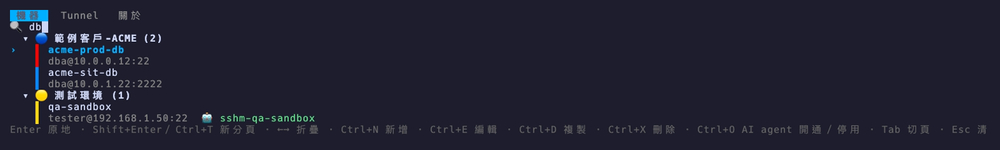
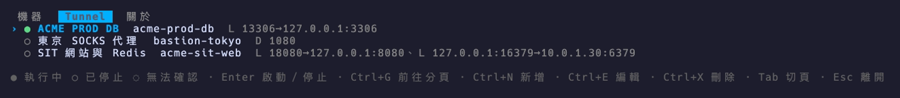
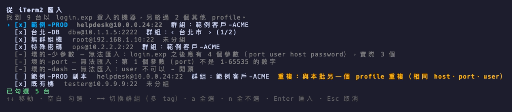
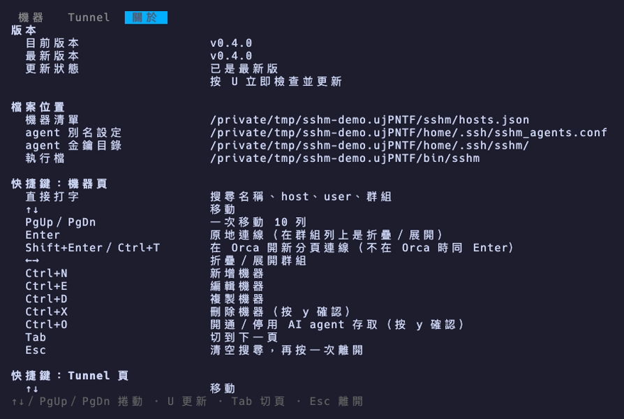
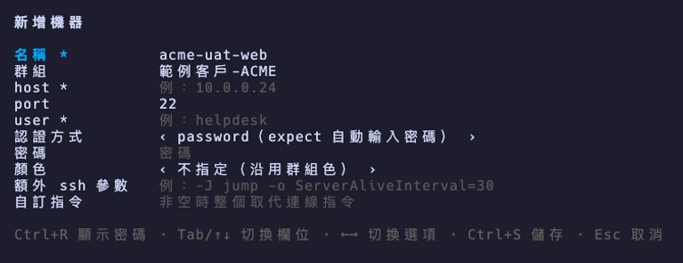

01 · 搜尋打字就過濾
開啟後游標就在搜尋框，直接打字即可過濾，比對名稱、host、user、群組（不分大小寫）。
sshm acme開清單並預填搜尋字- Enter 在目前的 terminal 原地連線
- Esc 清空搜尋，再按一次離開

// 功能
按 Tab 在「機器」→「Tunnel」→「關於」三頁之間輪流切換。
開啟後游標就在搜尋框，直接打字即可過濾，比對名稱、host、user、群組（不分大小寫）。
sshm acme 開清單並預填搜尋字
管理 SSH 轉送（-L／-R／-D）。每列顯示狀態燈、名稱、機器名稱與規則摘要（例 L 13306→127.0.0.1:3306、D 1080）。

iTerm2 若是用 login.exp <port> <user> <host> <password> 登入，sshm import-iterm 一次匯入。

「關於」頁列出目前版本、GitHub 上的最新版本、檔案位置與快捷鍵一覽。有新版時，機器頁的狀態列會提示到「關於」按 U 更新。
sshm：只能確認下載過程沒有損壞或被截斷，無法防止 Release 本身或 GitHub 帳號被竄改；目前沒有簽章驗證
// 給 AI agent 使用
讓別的 AI agent（Claude Code、Codex 等）能連進 VM 查東西，而且正常使用時不需要、也不會接觸密碼：sshm 用已存的密碼登入一次，替每台機器裝上一把專用金鑰並寫好 ssh 別名，之後 agent 只用 ssh <別名> 連線。
在 TUI 的機器清單選一台按 Ctrl+O 也能開通，已開通的再按一次是停用。這和安裝步驟 3 在 zsh 提示列上叫出 sshm 的 Ctrl+O 是不同功能。
安全界線：這個功能防的是 agent「誤開通」與「順手拿密碼來用」，不是防惡意繞過。agent 與 sshm 在同一個 OS 帳號下執行，技術上讀得到 hosts.json 裡的明碼密碼與 ~/.ssh/sshm/ 的私鑰。要防惡意的 agent，得讓它跑在另一個 OS 帳號、容器或 VM 裡，讀不到你的家目錄。
$ sshm agent enable 範例客戶-PROD-VM # 開通（列出要做的事，按 y 才執行） $ sshm agent list # 已開通的機器 $ sshm agent list --json # 給 agent 讀的格式（不含密碼） $ sshm agent disable 範例客戶-PROD-VM # 停用（按 y 才執行） $ sshm agent guide # 印出給 agent 指引檔的說明 # 之後 agent 只需要： $ ssh sshm-prod-vm '<指令>'
// 安裝
需求：macOS（Apple Silicon 或 Intel）。密碼登入會用到 macOS 內建的 /usr/bin/expect 與 ssh，不用另外安裝。
# 1. 安裝（一行，自動判斷 Apple Silicon／Intel） mkdir -p ~/.local/bin && curl -fsSL "https://github.com/mark22013333/sshm/releases/latest/download/sshm_darwin_$(uname -m | sed s/x86_64/amd64/).tar.gz" | tar xz -C ~/.local/bin sshm # 2. 把安裝目錄加進 PATH，並讓行首帶空白的指令不進 history echo 'export PATH="$HOME/.local/bin:$PATH"' >> ~/.zshrc echo 'setopt HIST_IGNORE_SPACE' >> ~/.zshrc # 3. （選用）在 zsh 提示列按 Ctrl+O 叫出 sshm sshm zsh-widget >> ~/.zshrc # 4. 重新載入 source ~/.zshrc
sshm --version。升級可在 TUI 的「關於」頁按 U，或重跑步驟 1。xattr -d com.apple.quarantine sshm。go install github.com/mark22013333/sshm@latest（裝到 ~/go/bin）。sshm add 逐台新增。login.exp 登入的，sshm import-iterm 一次匯入。sshm export sshm-share.json（預設不含密碼），你執行 sshm import sshm-share.json，再於編輯畫面補上自己的密碼。分享清單時請不要加 --with-passwords，匯出檔中的密碼是明碼。
必填：名稱、host、user；Ctrl+S 儲存、Esc 取消。
// 已知限制
orca terminal create --command=… 行程存活的短暫期間，其參數仍含密碼。HISTCONTROL=ignorespace。~/.ssh/sshm/ 的程式都能用它登入已開通的機器，請只開通需要的機器，用完就停用。\ 解讀不同，密碼或參數含 \、' 時可能出錯。